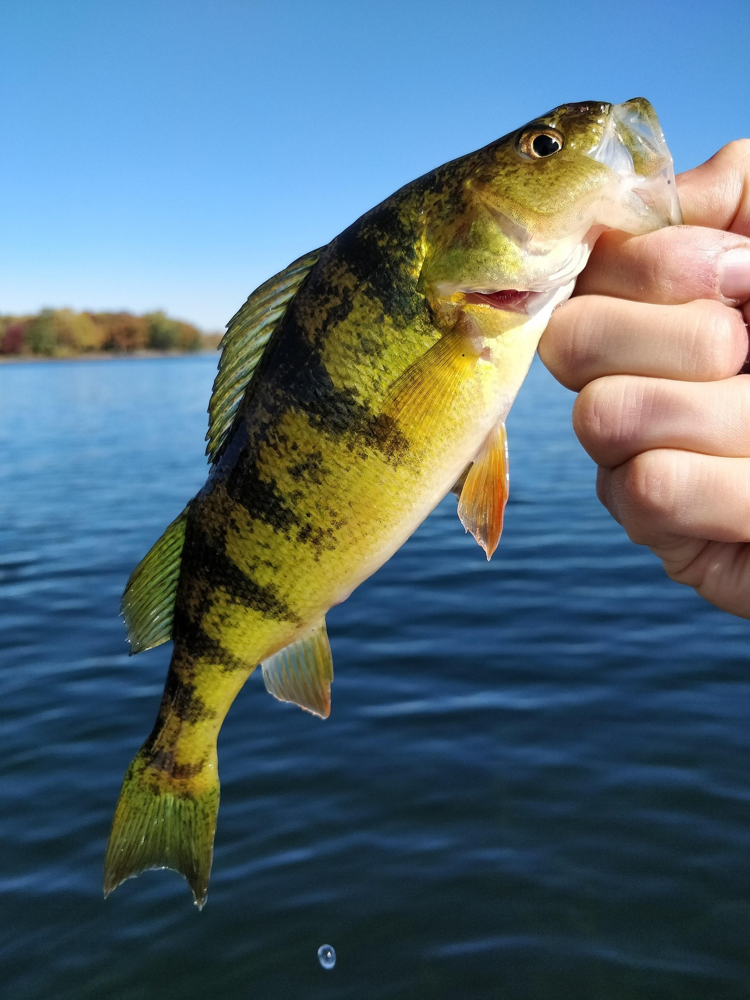
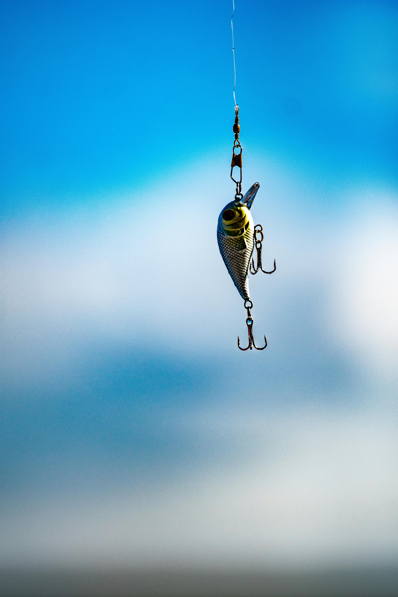
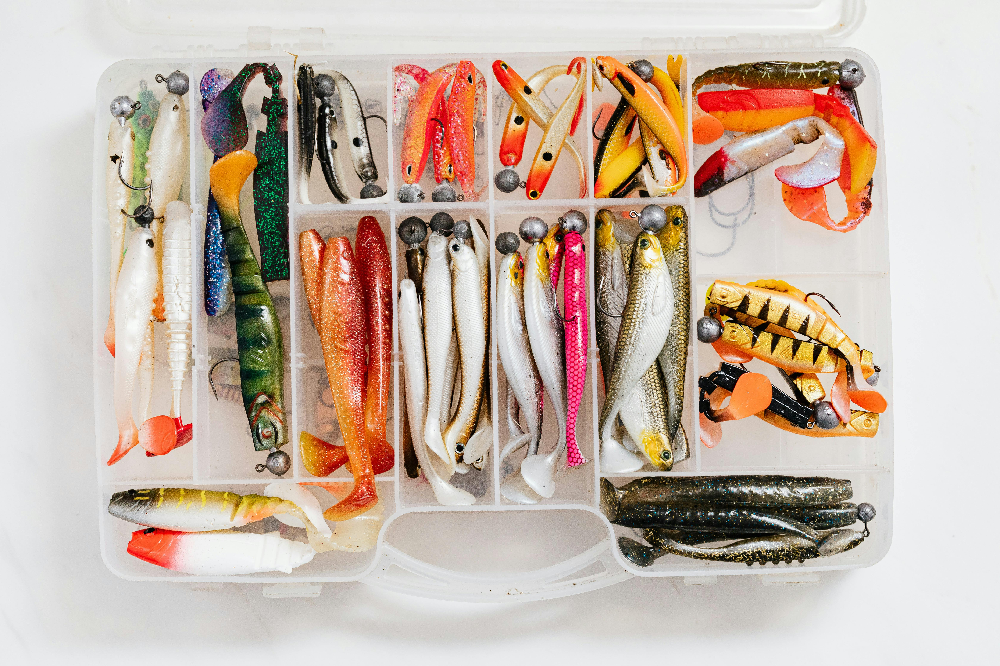
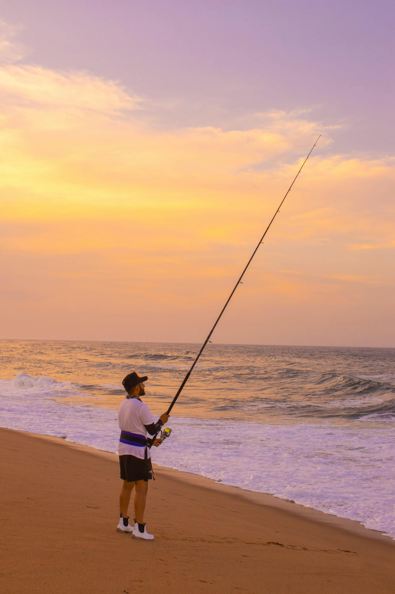
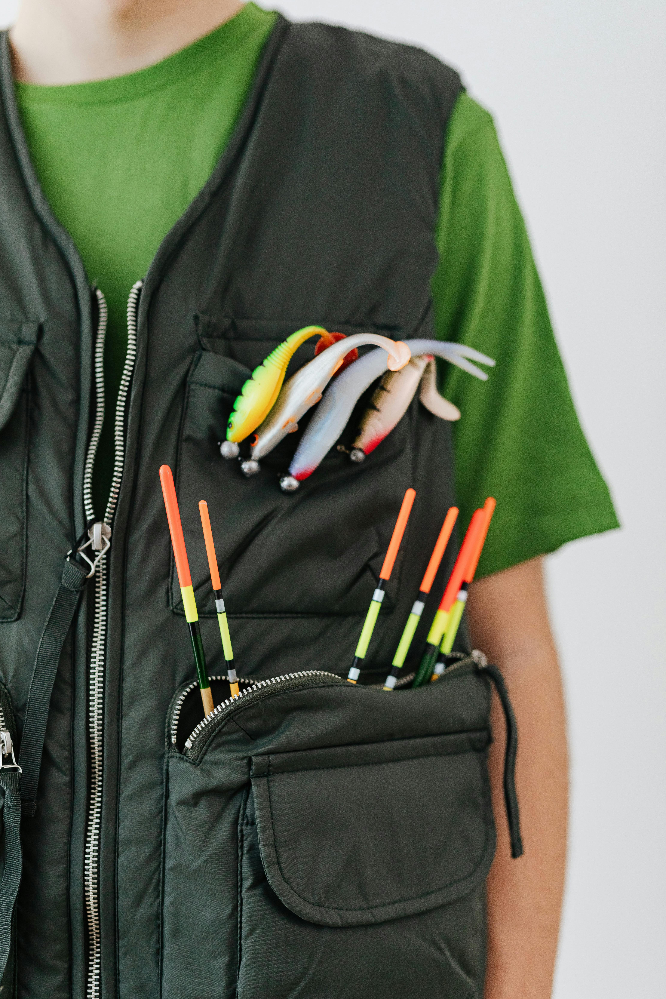

¿Qué es la pesca?
La pesca es el oficio o arte de capturar peces, tanto en aguas continentales como en el mar. Desde siempre ha sido una de las actividades económicas más antiguas de muchos pueblos del mundo.
Según la FAO, en 2010 había unos 56,8 millones de pescadores y piscicultores en el mundo, y el 84 % trabajaba en Asia. La pesca de captura se ha estancado, mientras que cada vez más personas trabajan en la acuicultura.

Historia
La pesca se practica desde el Paleolítico Superior, hace unos 40.000 años. Los restos del hombre de Tianyuan, en el este de Asia, demuestran que comía pescado de agua dulce con regularidad.
Conchas, espinas y pinturas rupestres indican que el marisco era importante para sobrevivir. Incluso se cree que los neandertales ya pescaban hace unos 200.000 años, y que las redes y las trampas impulsaron el desarrollo de la cestería y del tejido.
Los asentamientos permanentes más antiguos, como el de Lepenski Vir, casi siempre estaban ligados a la pesca como principal fuente de alimento.

La pesca como deporte
La pesca deportiva se practica por ocio o en competición, de forma individual o en equipo. Hay muchas técnicas y se puede pescar en ríos, lagunas, desde la orilla del mar o en mar abierto.
Las federaciones regionales y nacionales regulan los aparejos, el cupo de capturas y el tamaño de cada especie, además de organizar concursos y campeonatos a todos los niveles.

Competición
Pescadores profesionales y aficionados de todo el mundo siguen unas reglas comunes para poder aparecer en el informe de récords mundiales de pesca deportiva.
La pesca continental se hace en ríos, embalses, lagos o lagunas, con cebos vivos o muertos y señuelos artificiales. La pesca marítima se practica desde espigones, puertos y playas, y cada vez más desde embarcación.

Pesca en Asturias
Asturias tiene más de 345 kilómetros de costa, ríos y rías, y un clima templado y húmedo todo el año, ideal para la pesca deportiva. Se puede practicar en solitario o con familia y amigos, siempre en contacto con la naturaleza.
Precauciones y recomendaciones
Antes de empezar hay que conocer las normas de cada zona, tener la licencia y saber qué especies, tallas y cantidades se pueden pescar. Deja la menor huella posible en la naturaleza.
Equipo básico
- Caña, carrete y sedal
- Anzuelos, plomos y cebos
- Tijeras, cuchillo y cesto
- Ropa impermeable y botas de agua